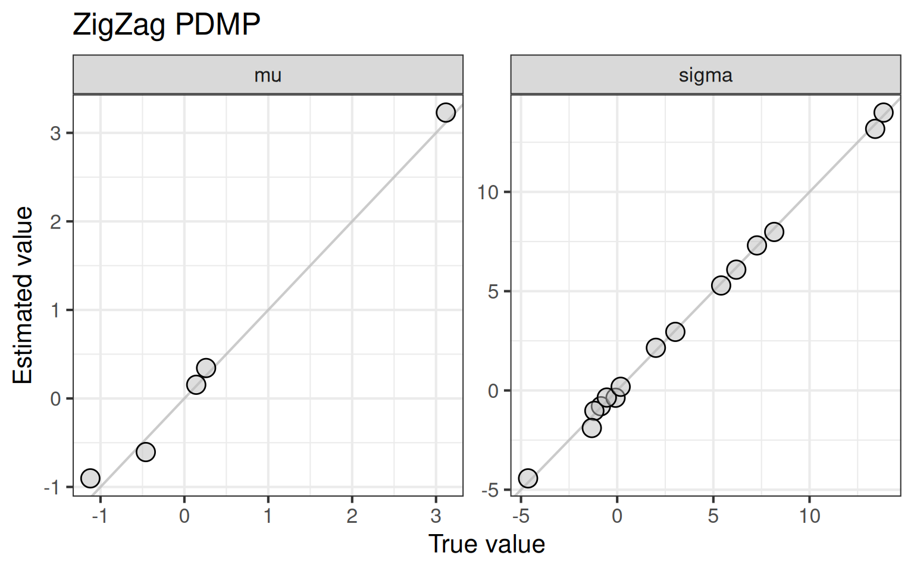
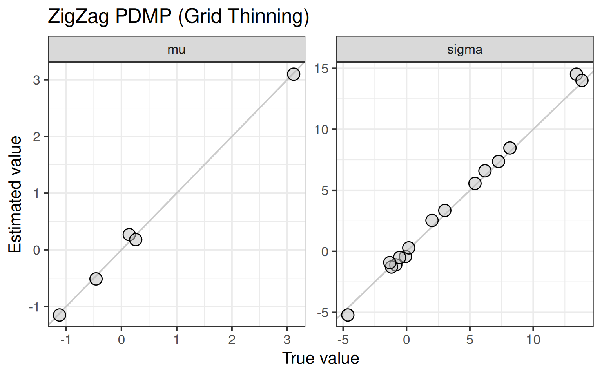
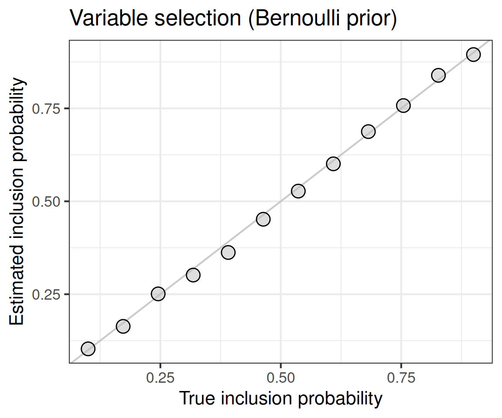
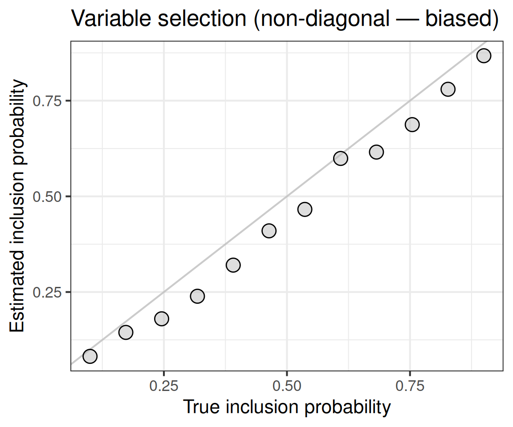
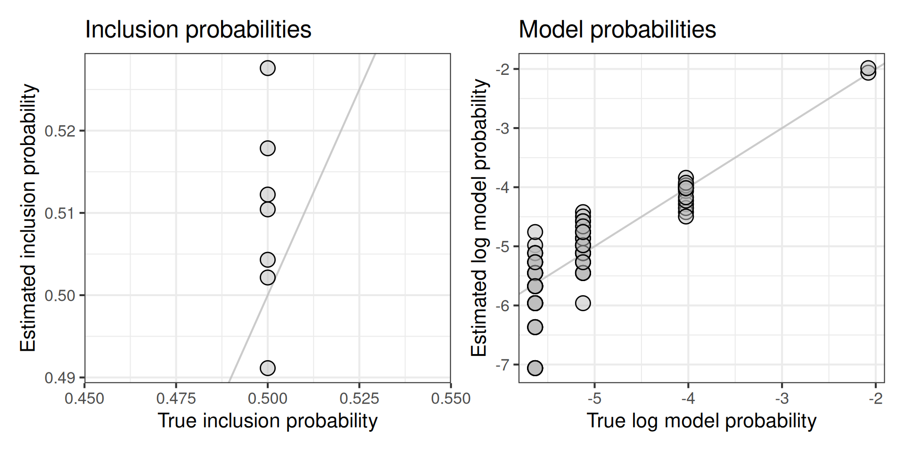
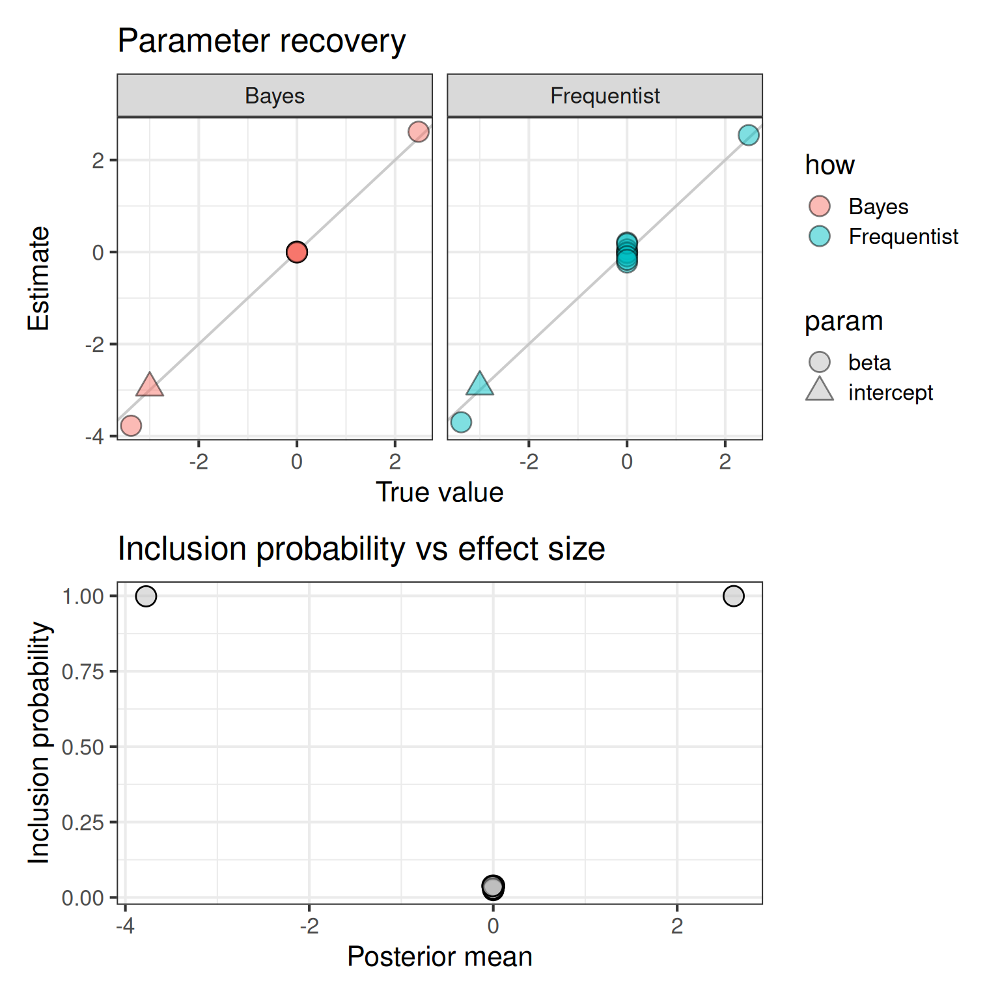

library(PDMPSamplersR)
library(tibble)
library(ggplot2)
library(patchwork)
library(fs)
# some personal recommendations for nicer-looking plots
# requires ggplot2 >= 3.4.0 for element_geom()
theme_set(
theme_bw(base_size = 16) +
theme(
geom = element_geom(pointshape = 21, pointsize = 5, fill = alpha("grey", .5))
)
)
stan_model_dir <- system.file("stan", "models", package = "PDMPSamplersR")This vignette demonstrates how to use PDMPSamplersR to sample from Stan models using piecewise deterministic Markov processes (PDMPs). We cover:
- Multivariate normal targets with the ZigZag sampler
- Grid-based thinning strategies
- Variable selection via spike-and-slab priors (Bernoulli and beta-binomial)
- Logistic regression
- A Bayesian t-test with Bayes factor computation
Multivariate normal with ZigZag
We start by sampling from a 5-dimensional multivariate normal distribution. The mean and covariance are drawn at random and passed both as the Stan data and as the flow parameters.
set.seed(123)
d <- 5
mean_vec <- rnorm(d, 0, 2)
cov_matrix <- stats::rWishart(1, df = d + 2, Sigma = diag(d))[, , 1]
stan_data <- list(N = d, mu = mean_vec, sigma = cov_matrix)
data_path <- tempfile(fileext = ".json")
write_stan_json(stan_data, data_path)
model_path <- path(stan_model_dir, "mvnormal.stan")
result <- pdmp_sample_from_stanmodel(
model_path, data_path,
flow = "ZigZag", T = 10000,
flow_mean = mean_vec, flow_cov = cov_matrix
)Compare estimated and true means and covariances:
est_mean <- mean(result)
est_cov <- cov(result)
tib <- tibble(
truth = c(mean_vec, cov_matrix[lower.tri(cov_matrix, diag = TRUE)]),
estimate = c(est_mean, est_cov[lower.tri(est_cov, diag = TRUE)]),
what = rep(c("mu", "sigma"), times = c(d, d * (d + 1) / 2))
)
ggplot(tib, aes(x = truth, y = estimate)) +
geom_abline(slope = 1, intercept = 0, color = "grey", alpha = .8) +
geom_point() +
facet_wrap(~what, scales = "free") +
labs(title = "ZigZag PDMP", x = "True value", y = "Estimated value")
Multivariate normal with grid thinning
The same target, but using the GridThinningStrategy algorithm.
result2 <- pdmp_sample_from_stanmodel(
model_path, data_path,
flow = "ZigZag", algorithm = "GridThinningStrategy", T = 10000
)
est_mean <- mean(result2)
est_cov <- cov(result2)
tib <- tibble(
truth = c(mean_vec, cov_matrix[lower.tri(cov_matrix, diag = TRUE)]),
estimate = c(est_mean, est_cov[lower.tri(est_cov, diag = TRUE)]),
what = rep(c("mu", "sigma"), times = c(d, d * (d + 1) / 2))
)
ggplot(tib, aes(x = truth, y = estimate)) +
geom_abline(slope = 1, intercept = 0, color = "grey", alpha = .8) +
geom_point() +
facet_wrap(~what, scales = "free") +
labs(title = "ZigZag PDMP (Grid Thinning)", x = "True value", y = "Estimated value")
Spike-and-slab variable selection (Bernoulli prior)
When the covariance matrix is diagonal, variable selection with sticky ZigZag is exact. We set different prior inclusion probabilities for each dimension and check recovery.
set.seed(123)
d <- 12
mean_vec <- rep(0, d)
cov_matrix <- stats::rWishart(1, df = d + 2, Sigma = diag(d))[, , 1]
cov_matrix <- diag(diag(cov_matrix))
stan_data <- list(N = d, mu = mean_vec, sigma = cov_matrix)
data_path <- tempfile(fileext = ".json")
write_stan_json(stan_data, data_path)
prior_incl_prob <- seq(0.1, 0.9, length.out = d)
result3 <- pdmp_sample_from_stanmodel(
model_path, data_path,
flow = "ZigZag", T = 10000,
algorithm = "GridThinningStrategy",
sticky = TRUE, can_stick = rep(TRUE, d),
model_prior = bernoulli(prior_incl_prob),
parameter_prior = dnorm(rep(0, d), mean_vec, sqrt(diag(cov_matrix)))
)
tib <- tibble(
true = prior_incl_prob,
est = inclusion_probs(result3)
)
ggplot(tib, aes(x = true, y = est)) +
geom_abline(slope = 1, intercept = 0, color = "grey", alpha = .8) +
geom_point() +
labs(
title = "Variable selection (Bernoulli prior)",
x = "True inclusion probability",
y = "Estimated inclusion probability"
)
Non-diagonal covariance (biased case)
When the covariance matrix is not diagonal, the spike-and-slab approach produces biased results because the conditional distributions change when variables are excluded. This is a known limitation.
set.seed(123)
d <- 12
mean_vec <- rep(0, d)
cov_matrix <- stats::rWishart(1, df = d + 2, Sigma = diag(d))[, , 1]
stan_data <- list(N = d, mu = mean_vec, sigma = cov_matrix)
data_path <- tempfile(fileext = ".json")
write_stan_json(stan_data, data_path)
prior_incl_prob <- seq(0.1, 0.9, length.out = d)
result4 <- pdmp_sample_from_stanmodel(
model_path, data_path,
flow = "ZigZag", T = 10000,
algorithm = "GridThinningStrategy",
sticky = TRUE, can_stick = rep(TRUE, d),
model_prior = bernoulli(prior_incl_prob),
parameter_prior = dnorm(rep(0, d), mean_vec, sqrt(diag(cov_matrix)))
)
tib <- tibble(
true = prior_incl_prob,
est = inclusion_probs(result4)
)
ggplot(tib, aes(x = true, y = est)) +
geom_abline(slope = 1, intercept = 0, color = "grey", alpha = .8) +
geom_point() +
labs(
title = "Variable selection (non-diagonal — biased)",
x = "True inclusion probability",
y = "Estimated inclusion probability"
)
Spike-and-slab with beta-binomial prior
Instead of independent Bernoulli priors on inclusion, we can use a beta-binomial prior which induces a common inclusion probability across all dimensions.
set.seed(123)
d <- 7
mean_vec <- rep(0, d)
cov_matrix <- stats::rWishart(1, df = d + 2, Sigma = diag(d))[, , 1]
cov_matrix <- diag(diag(cov_matrix))
stan_data <- list(N = d, mu = mean_vec, sigma = cov_matrix)
data_path <- tempfile(fileext = ".json")
write_stan_json(stan_data, data_path)
mp <- betabernoulli(1, 1)
prior_incl_prob <- rep(mp$a / (mp$a + mp$b), d)
result5 <- pdmp_sample_from_stanmodel(
model_path, data_path,
flow = "ZigZag", T = 10000,
algorithm = "GridThinningStrategy",
sticky = TRUE, can_stick = rep(TRUE, d),
model_prior = mp,
parameter_prior = dnorm(rep(0, d), mean_vec, sqrt(diag(cov_matrix)))
)
beta_binomial_pmf <- function(k, d, a, b, log = FALSE,
individual_model = FALSE) {
log_binom <- lfactorial(d) - lfactorial(k) - lfactorial(d - k)
log_beta_n <- lbeta(a + k, b + d - k)
log_beta_d <- lbeta(a, b)
log_prob <- (!individual_model) * log_binom + log_beta_n - log_beta_d
if (log) log_prob else exp(log_prob)
}
samples <- discretize(result5)
tib_incl <- tibble(
true = prior_incl_prob,
est = inclusion_probs(result5)
)
plt_incl <- ggplot(tib_incl, aes(x = true, y = est)) +
geom_abline(slope = 1, intercept = 0, color = "grey", alpha = .8) +
geom_point() +
labs(
title = "Inclusion probabilities",
x = "True inclusion probability",
y = "Estimated inclusion probability"
)
model_indicators <- apply(1L * (samples != 0), 1L, paste0, collapse = "")
model_freq <- table(model_indicators)
model_probs <- model_freq / sum(model_freq)
model_sizes <- nchar(gsub("0", "", names(model_freq), fixed = TRUE))
true_log_probs <- beta_binomial_pmf(
model_sizes, d, mp$a, mp$b,
log = TRUE, individual_model = TRUE
)
est_log_probs <- log(unname(c(model_probs)))
tib_model <- tibble(
true_log = true_log_probs,
est_log = est_log_probs
)
plt_model <- ggplot(tib_model, aes(x = true_log, y = est_log)) +
geom_abline(slope = 1, intercept = 0, color = "grey", alpha = .8) +
geom_point() +
labs(
title = "Model probabilities",
x = "True log model probability",
y = "Estimated log model probability"
)
plt_incl + plt_model
Logistic regression with variable selection
We simulate binary data from a logistic model with 10 predictors, only 2 of which are active. We compare the PDMP posterior to a frequentist GLM fit.
set.seed(123)
n <- 200
d <- 10
d_on <- floor(0.2 * d)
idx_on <- sample(1:d, d_on, FALSE)
intercept <- -3
beta <- rep(0, d)
beta[idx_on] <- rnorm(d_on, 0, 2)
X <- scale(matrix(rnorm(n * d), n, d))
linpred <- intercept + X %*% beta
y <- c(runif(n) <= plogis(linpred))
fit <- stats::glm(y ~ X, family = binomial())
model_path_lr <- path(stan_model_dir, "logistic_regression.stan")
sd_prior <- 10
stan_data <- list(N = n, D = d, X = X, y = y, sd_prior = sd_prior)
data_path <- tempfile(fileext = ".json")
write_stan_json(stan_data, data_path)
result_lr <- pdmp_sample_from_stanmodel(
model_path_lr, data_path,
flow = "ZigZag", T = 20000,
algorithm = "GridThinningStrategy",
sticky = TRUE,
can_stick = c(FALSE, rep(TRUE, d)),
model_prior = bernoulli(0.5),
parameter_prior = dnorm(rep(0, d + 1), 0, sd_prior)
)
samples <- discretize(result_lr)
tib_lr <- tibble(
true = rep(c(intercept, beta), 2),
est = c(mean(result_lr), coef(fit)),
how = rep(c("Bayes", "Frequentist"), each = d + 1),
p_incl = c(inclusion_probs(result_lr), rep(1, d + 1)),
param = rep(c("intercept", rep("beta", d)), 2)
)
plt_recovery <- ggplot(tib_lr, aes(x = true, y = est, fill = how,
shape = param)) +
geom_abline(slope = 1, intercept = 0, color = "grey", alpha = .8) +
geom_point(alpha = .5) +
scale_shape_manual(values = c(21, 24)) +
facet_wrap(~how) +
labs(title = "Parameter recovery", x = "True value", y = "Estimate")
plt_incl <- subset(tib_lr, how == "Bayes" & param == "beta") |>
ggplot(aes(x = est, y = p_incl)) +
geom_point() +
labs(
title = "Inclusion probability vs effect size",
x = "Posterior mean", y = "Inclusion probability"
)
plt_recovery / plt_incl
Bayesian t-test with Bayes factor
Finally, we perform a Bayesian two-sample t-test and compare the PDMP Bayes factor to the analytic result from the BayesFactor package.
set.seed(123)
nx <- 30
ny <- 35
mux <- 0
muy <- 0.5
sigma2 <- 2.1
x1 <- rnorm(nx, mux, sqrt(sigma2))
x2 <- rnorm(ny, muy, sqrt(sigma2))
rscale <- 1.0
analytic_results <- BayesFactor::ttestBF(x = x1, y = x2, rscale = rscale)
model_path_tt <- path(stan_model_dir, "ttest.stan")
stan_data <- list(nx = nx, ny = ny, x = x1, y = x2, rscale = rscale)
data_path <- tempfile(fileext = ".json")
write_stan_json(stan_data, data_path)
result_ttest <- pdmp_sample_from_stanmodel(
model_path_tt, data_path,
flow = "ZigZag", T = 100000,
algorithm = "GridThinningStrategy",
grid_n = 30,
sticky = TRUE,
can_stick = c(FALSE, TRUE, FALSE),
model_prior = bernoulli(0.5),
parameter_prior = rep(dcauchy(0, 0, rscale), 3)
)
prior_inclusion_prob <- 0.5
posterior_inclusion_prob <- inclusion_probs(result_ttest)[2]
prior_odds <- prior_inclusion_prob / (1 - prior_inclusion_prob)
posterior_odds <- posterior_inclusion_prob / (1 - posterior_inclusion_prob)
pdmp_bf <- posterior_odds / prior_odds
analytic_bf <- BayesFactor::extractBF(analytic_results, onlybf = TRUE)
tibble(
method = c("PDMP", "Analytic"),
bayes_factor = c(pdmp_bf, analytic_bf)
)# A tibble: 2 × 2
method bayes_factor
<chr> <dbl>
1 PDMP 1.33
2 Analytic 1.34